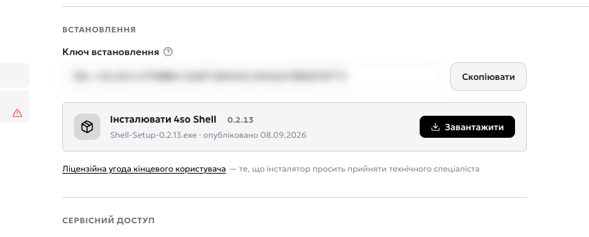
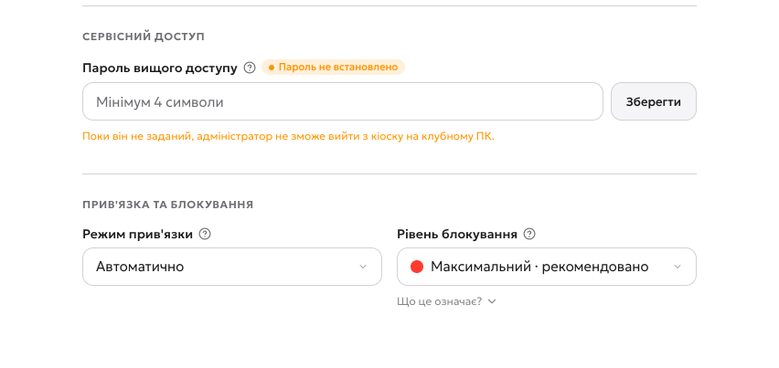
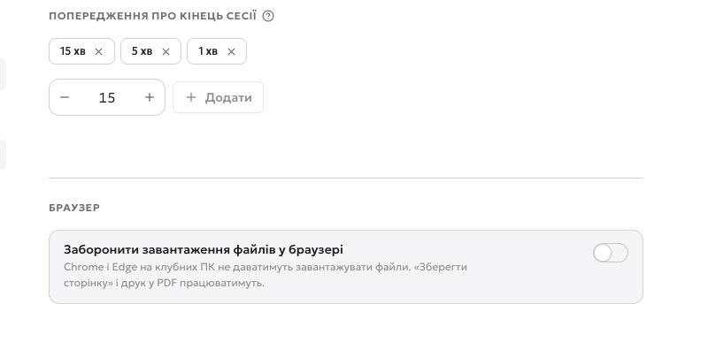
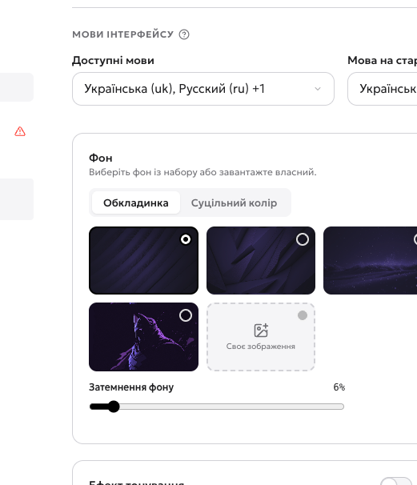
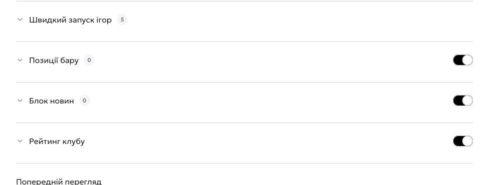
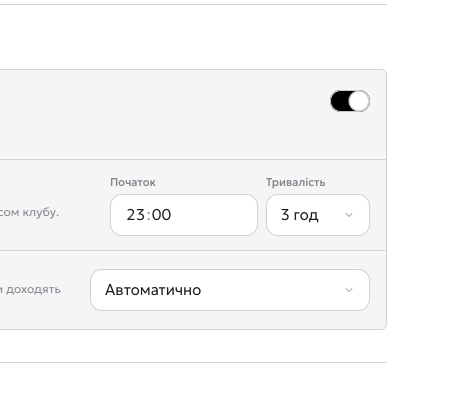

Де взяти Shell
Shell — програма, яка стоїть на самій ігровій машині: показує гостю екран входу, рахує сесію й слухає команди адміністратора. Інсталятор і ключ лежать у налаштуваннях клубу — Налаштування → Shell → «Основне».
- 1Ключ встановлення — його інсталятор питає на клубному ПК. Ключ один на весь клуб; поводьтеся з ним як з паролем. У кадрі він розмитий.
- 2Скопіювати — ключ у буфер, вводити руками не треба.
- 3Завантажити — файл
Shell-Setup-…exeз номером версії й датою публікації. Качайте його на кожну машину або покладіть у спільну папку. - 4Ліцензійна угода — те, що інсталятор попросить прийняти під час встановлення.

Задайте сервісний доступ
Це робиться до встановлення на машинах. Shell працює в режимі кіоску: гість бачить лише ваш екран і нічого більше. Щоб адміністратор міг з нього виходити, потрібен окремий пароль.
- 1Пароль вищого доступу — задайте одразу. Поки його немає, адміністратор не зможе вийти з кіоску на клубному ПК: ні до робочого столу, ні до налаштувань Windows.
- 2Зберегти — пароль застосовується одразу, окремої кнопки внизу сторінки немає.
- 3Режим прив’язки — «Автоматично» дозволяє новій машині зайняти вільний слот сама. Ручний режим — коли хочете підтверджувати кожен ПК.
- 4Рівень блокування — «Максимальний» ховає від гостя все, крім Shell. Знижуйте лише якщо гостям потрібен доступ до системи.

Налаштуйте поведінку сесії
Вкладка «Додаткові опції» — про те, як Shell поводиться з гостем під час гри.
- 1За скільки хвилин попередити — Shell скаже гостю, що час добігає кінця. Типово 15, 5 і 1 хвилина.
- 2Додати — своє значення до списку попереджень.
- 3Заборона завантажень у браузері — Chrome і Edge на клубних ПК не даватимуть зберігати файли. «Зберегти сторінку» і друк у PDF лишаються.

Зробіть екран гостя своїм
Дві вкладки відповідають за те, що гість бачить на машині: «Кастомізація інтерфейсу» — вигляд (фон, кольори, мови), «Кастомізація дашборду» — вміст (ігри, бар, новини, рейтинг).
- 1Доступні мови — з яких гість може вибирати на екрані входу.
- 2Мова на старті — та, яку машина показує першою.
- 3Затемнення фону — щоб текст на екрані входу читався поверх картинки. Нижче — тонування, закруглення й своє зображення фону.

- 1Позиції бару — до трьох товарів просто на екрані гостя. Перемикач вимикає блок повністю.
- 2Блок новин — слайди-банери: акції, турніри, реклама. Слайдів немає — Shell приховає блок сам.
- 3Рейтинг клубу — таблиця найактивніших гравців на екрані машини.

Оновлення без переривання гри
Shell оновлюється сам, але у вибране вами вікно — щоб оновлення не впало посеред сесії.
- 1Автооновлення — клуб іде за актуальною версією, релізи доходять самі.
- 2Тривалість вікна — скільки годин після початку можна ставити оновлення. Типово три.
- 3Режим оновлення — «Автоматично» ставить у вибране вікно; вручну ви самі тиснете «Запланувати оновлення».

Відео: усі налаштування Shell
Обхід усіх вкладок: встановлення, сервісний доступ, додаткові опції, кастомізація й оновлення. Ключ у кадрі розмитий.
Далі
Панель готова — час до самих машин. Розділ 6: встановлення на клубному ПК — усі пʼять екранів інсталятора на живій Windows-машині.
- Ключ і підтвердження клубу — перші два кроки інсталятора.
- Прив’язка до пристрою — зайняти готовий слот або створити ПК на місці.
- Перевірка — Shell на екрані машини й «Онлайн» у панелі.